Propuesta en docs/equilibrio/propuesta-bloque2.md. Cada pantalla se abre en vivo (cambia el tamaño de la ventana) o se mira en las capturas: ordenador 1280×720, iPad apaisado y iPhone apaisado.
Abiertos con su nivel y lo que da el siguiente; bloqueados con candado, para qué sirven y qué falta (✓/✗). Arriba, «Tu siguiente objetivo». En móvil solo se ven los requisitos que faltan.
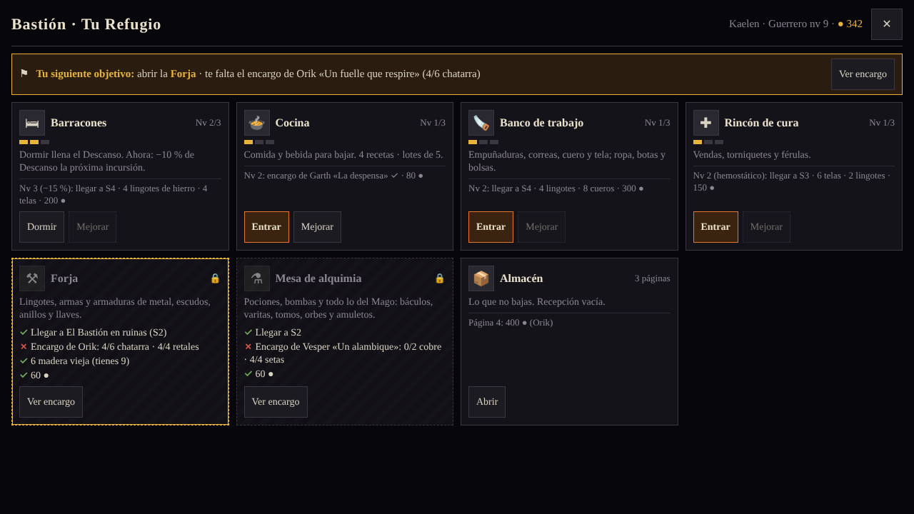
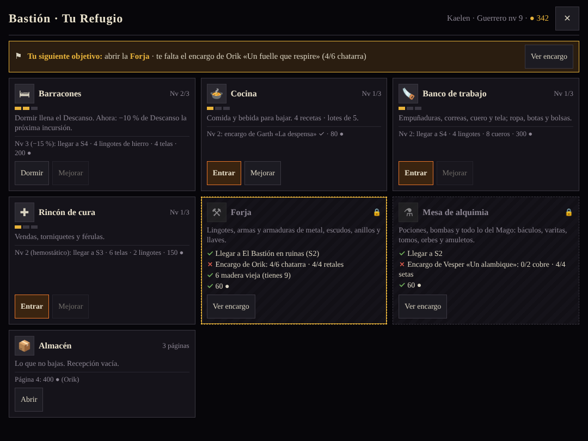
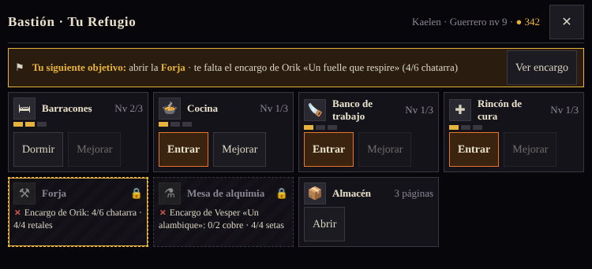
Recetas con filtros a la izquierda; a la derecha el objeto, los componentes en verde o rojo, «Dónde conseguirlo» con «Ir a su receta», la cantidad y «Craftear».
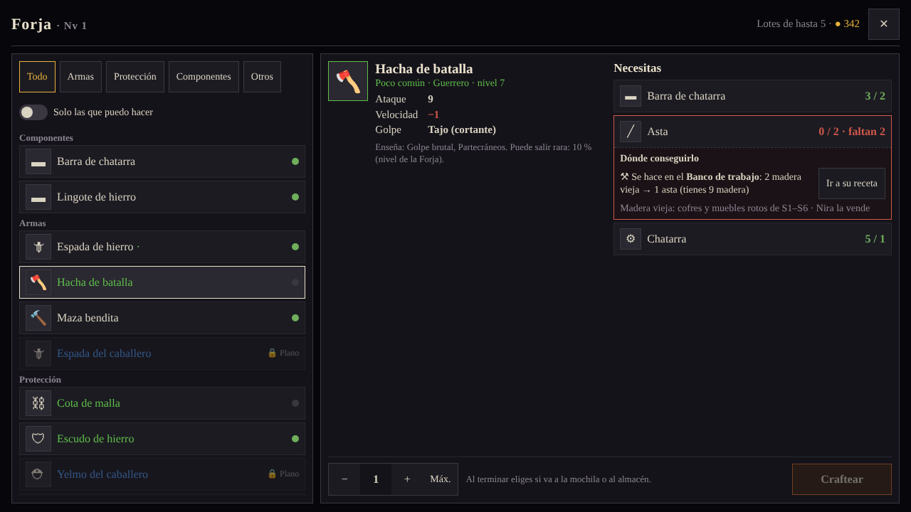
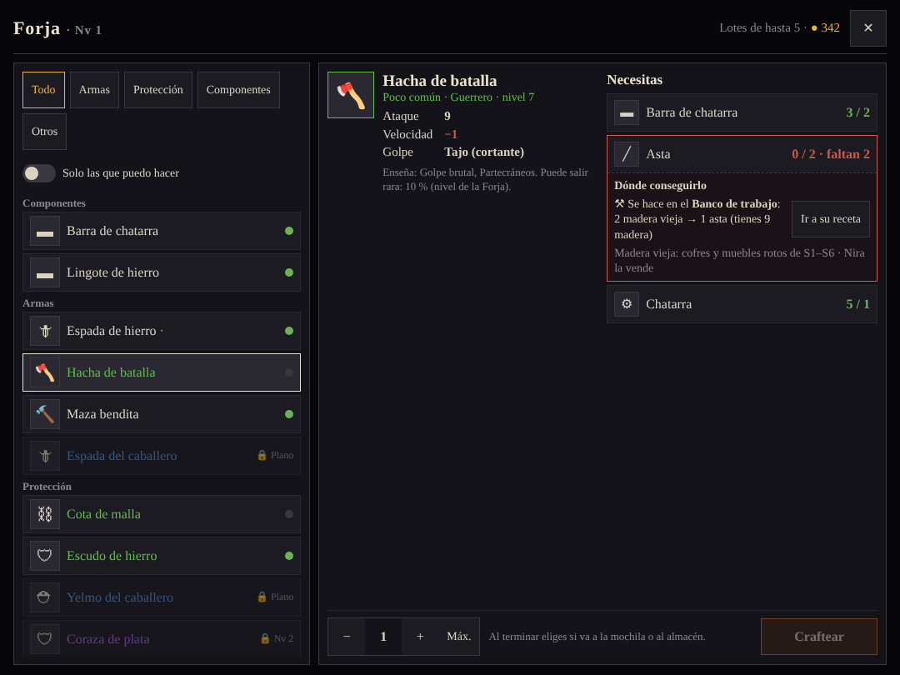
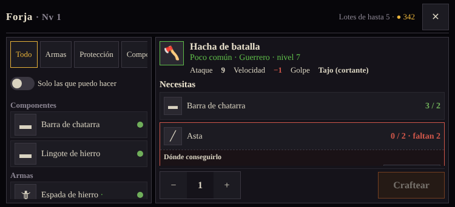
Al pulsar «Craftear» sale el objeto con su ficha (y si tuvo acabado fino). Eliges «A la mochila» o «Al almacén»; si cierras sin elegir, va al almacén.
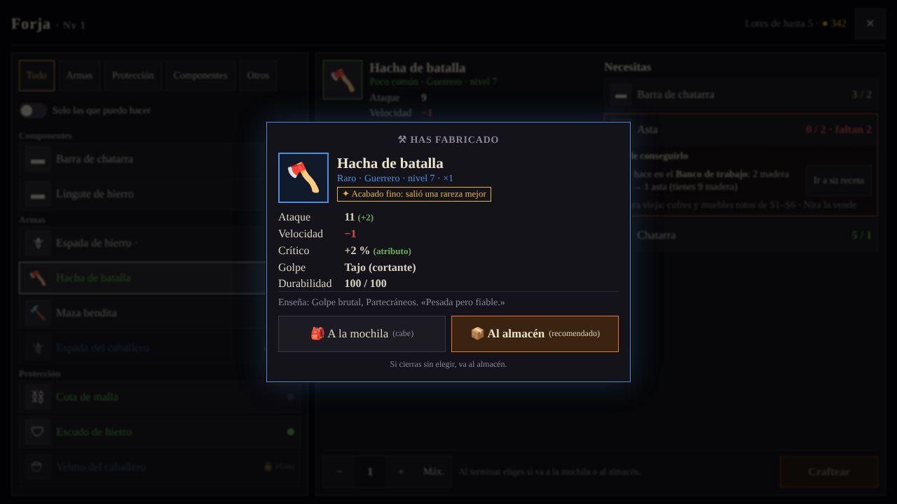
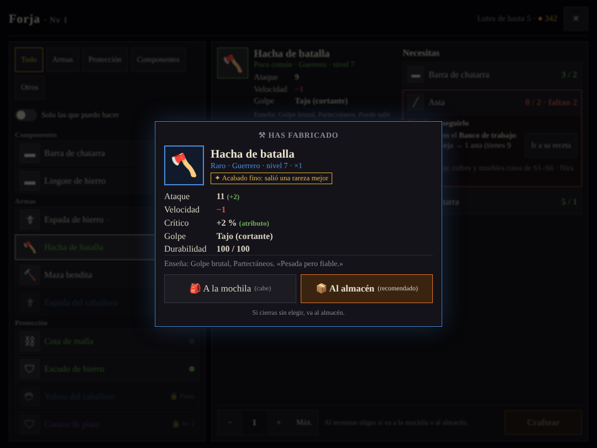
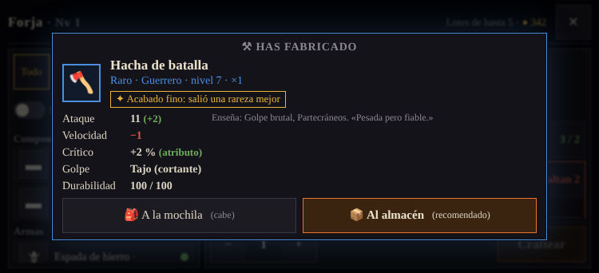
Se marcan varios objetos como en la venta; el resumen separa lo seguro de lo posible con su probabilidad. Lo de recluta, equipado o de misión sale con candado.
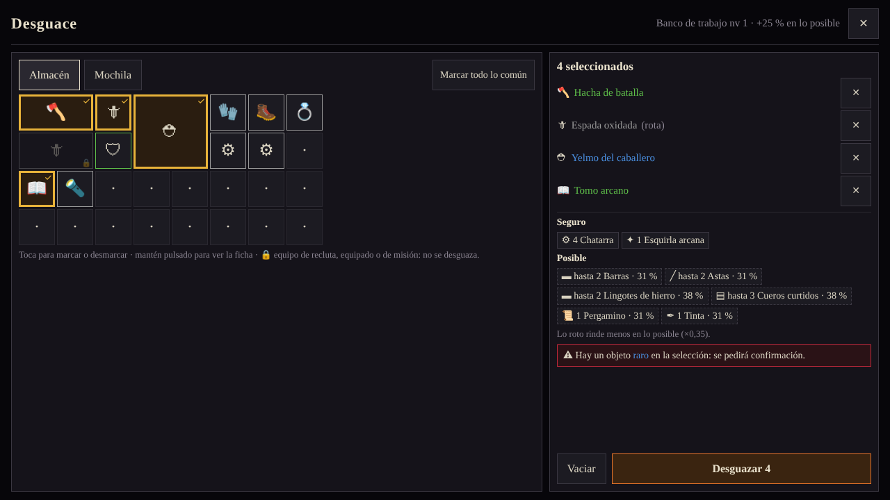
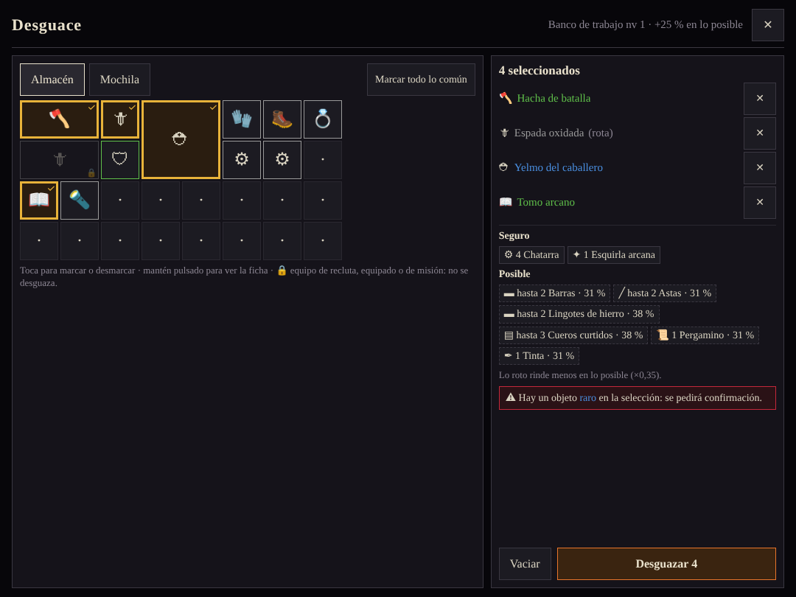
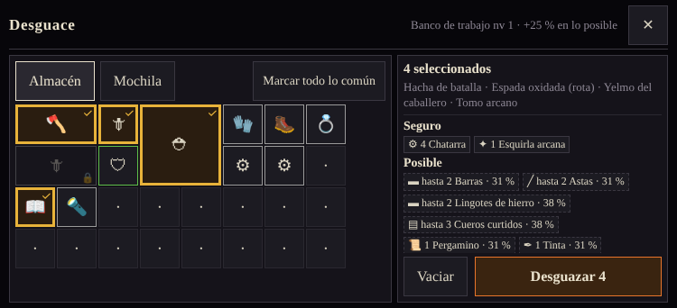